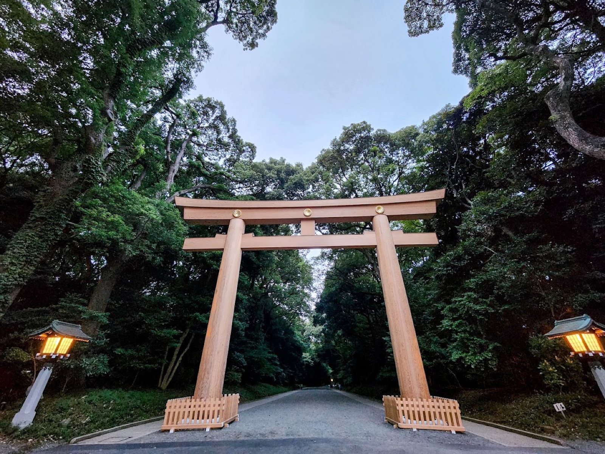

Welcome
to Tokyo!
WALKING CITY TOUR
Dear Elite Club 2025 Winners, welcome to Tokyo! Here is your plan for this afternoon.
–14:00
Takeshita Street
After the morning activities, we will drop you off at Takeshita Street.
Meet at the First Torii Gate
Please meet at the First Torii Gate at 14:00.
Once around 10 guests have gathered, each group will start the tour.
📍 MEETING POINT — Meiji Jingu First Torii Gate
🔗 Google Maps ↗
14:00–15:00 · PREFER A BUS TO SHIBUYA?
If you do not wish to walk to Shibuya, please leave the walking tour group and wait until around 10 guests have gathered. We will then arrange a bus to Shibuya.
There will be no guide on this bus. It will take you to MIYASHITA PARK / FREEMAN CAFE, where you can enjoy indoor shopping.
This is also the meeting point for the 17:30 bus back to the hotel.
On foot to Shibuya
Your guide will lead you through Harajuku and the city streets toward Shibuya.
⏱️ Approx. 1 hour including breaksYour guide will take you to Shibuya Crossing and show you around Shibuya.
📍 SHIBUYA
If you stay with your guide, your guide will lead you back to the bus meeting point before 17:30.
If you choose to leave the group during the tour, please remember the bus meeting point below and return there on your own before 17:30.
MIYASHITA PARK / FREEMAN CAFE
📍 BUS MEETING POINT — MIYASHITA PARK / FREEMAN CAFE
🔗 Google Maps ↗Tap a photo to view it in full.
If you miss the bus, please return to the hotel on your own.
Grand Hyatt Tokyo
6-10-3 Roppongi, Minato-ku, Tokyo